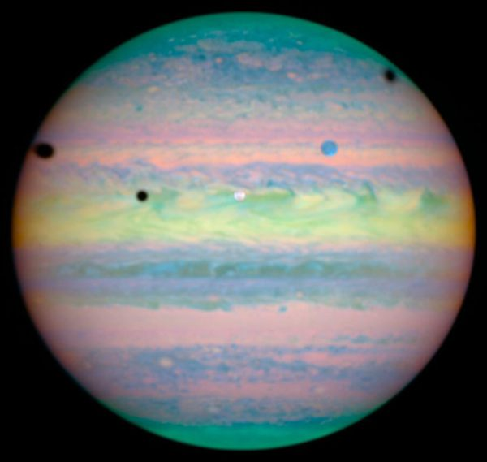
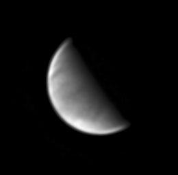
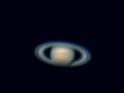
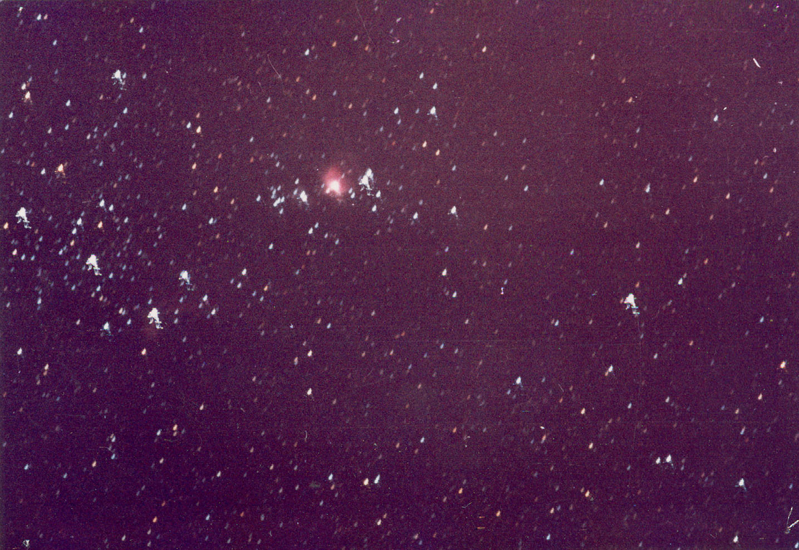
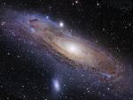

The Observation Sessions
We hold Observation sessions at least once a fortnight regularly. In these sessions, telescope will be used for observing Moon, nebulae, planets like Saturn etc. However, naked eye observations and using binoculars also plays an important role in astronomy. There are a lot of constellations and star patterns to be seen even with the naked eye. Informal session involving small quizzes and general discussions.
We also hold Observation Sessions when major events take place, including solar and lunar eclipses, Venus transit, etc.
 What you can expect to seeWe are a club for amateur astronomy, and our equipment is limited. Don't expect to see hubble telescope images! On the other hand it is possible to see a wealth of detail on the moon, planets and various celestial objects.
As I recall, I was very excited the first time I saw Saturn and its rings through a telescope at the Astronomy club. Saturn was no longer a picture in a book. It was real. And I am sure many astronomy enthusiasts in IIT Kanpur will feel the same way.
Stars and Constellations
The night sky appears to be full of stars. There are certain patterns which are easily recognizable, and these are called constellations. Constellations are also a name given to certain areas in the sky. Prominent patterns are called Asterisms, which may include stars in one or more constellation. Like constellations, they are composed of stars which, while they are in the same general direction, are not physically related, often being at significantly different distances from Earth. An asterism may be composed of stars from one or more constellations. They are mostly simple shapes and few stars make these patterns easy to identify and thus particularly useful to those just learning to orient themselves when viewing the night sky. Prominent asterisms include the Big Dipper , the Square of Pegasus , the Summer Triangle, the W of Cassiopeia, the Winter triangle , etc.
Many stars when viewed through a telescope turn out to be double or mutiple star systems. Albireo, in Cygnus is a famous double star system that looks beautiful through a telescope having one blue and one yellow star.
The Moon
The moon is the object which can be studied in by far the greatest detail using our telescopes. Half a degree in angular size when full and by far the brightest object in the sky, it is indeed difficult to miss. Contrary to popular belief, the Moon should ideally not be viewed at its full phase. During a full moon, rays of sunlight are hitting the visible portion of the moon perpendicular to the surface. As a result there is much less surface detail visible during a full moon than during other phases (such as the quarter and crescent phases) when sunlight hits the Moon at a much shallower angle. First quarter (six to nine days past new moon) is generally considered the best time to observe the Moon for backyard stargazers. Shadows and detail are most pronounced along the "terminator", the dividing line between the illuminated (day side) and dark (night side) of the Moon.
The moon, and the full moon in particular is often called
'Villain of the night sky'. This is because it is so bright it washes out the surrounding objects (planets and stars). This is especially true for full moon when it becomes difficult to see even bright stars.
Features on the lunar surface
The dark and relatively featureless lunar plains humans can clearly see when the Moon is full are called
maria , Latin for seas, since they were believed by ancient astronomers to be filled with water. These are now known to be vast solidified pools of ancient basaltic lava.
The lighter-colored regions of the Moon are called terrae, or more commonly just highlands, since they are higher than most maria. Several prominent mountain ranges on the near side are found along the periphery of the giant impact basins, many of which have been filled by mare basalt.
The Moon's surface shows obvious evidence of having been affected by impact cratering. Impact craters form when asteroids and comets collide with the lunar surface, and globally about half a million craters with diameters greater than 1 km can be found. The lack of an atmosphere, weather and recent geological processes ensures that many of these craters have remained relatively well preserved in comparison to those found on Earth.
The main planets that can be seen from the Earth are: 
Mercury: Observation of Mercury is complicated by its proximity to the Sun, as it is lost in the Sun's glare for much of the time. It is not easily seen as its greatest angular separation from the Sun (greatest elongation) is only 28.3°. It can only be seen in morning or evening twilight.
Venus: It is the brightest natural object in the night sky, except for the Moon, reaching an apparent magnitude of −4.6.Venus reaches its maximum brightness shortly before sunrise or shortly after sunset, for which reason it is often called the Morning Star or the Evening Star.
As it moves around its orbit, Venus displays phases like those of the Moon: it is new when it passes between the Earth and the Sun, full when it is on the opposite side of the Sun, and a half-phase when it is at its maximum elongations from the Sun. Venus is brightest when it is a thin crescent; it is much closer to Earth when a thin crescent than when gibbous, or full. Details are very difficult to make out on Venus because of it's dense cloud cover. It simply appears as a featureless white disc. However it's phases are easy to observe.
Right: Venus in crescent stage.
Mars: To the naked-eye, Mars usually appears a distinct yellow, orange, or reddish color, and varies in brightness more than any other planet as seen from Earth over the course of its orbit.
At its most favourable times—which occur twice every 32 years, alternately at 15 and 17-year intervals, and always between late July and late September—Mars shows
some detail in a telescope. Especially noticeable are the polar ice caps.
The point of Mars' closest approach to the Earth is known as opposition.
The next Mars opposition will occur on December 24, 2007.As Mars approaches opposition it begins a period of retrograde motion, which means it will appear to move backwards in a looping motion with respect to the background stars
Jupiter is usually the fourth brightest object in the sky (after the Sun, the Moon and Venus) however at times Mars appears brighter than Jupiter.
The Galilean moons of Jupiter ( Europa, Io , Ganymede, Callisto ) are among the largest moons in our solar system and are easily visible even through a small telescope or binoculars. They are so called because they were discovered by Galileo Galilei. They look like small white dots.
The Galilean moons have short periods of rotation. It is possible to see a difference in their positions within as little as two hours.
On very clear nights, it is possible to see a few bands of color ( ie. the cloud belts ) and the Great Red Spot in the surface of Jupiter.
Saturn:
The ringed planet, it is considered to be one of the most beautiful sights in our solar system. The rings are easily visible in a telescope. Saturn's rings can be seen face on , or head on (where they seem to vanish).
While it is a rewarding target for observation for most of the time it is visible in the sky, Saturn and its rings are best seen when the planet is at or near opposition.During the opposition of December 17, 2002, Saturn appeared at its brightest due to a favorable orientation of the rings relative to the Earth. Now the rings are slowly tilting in such a way that they appear to be vanishing as seen from Earth.
Other planets:Uranus and Neptune are ( theoretically ) possible to observe using telescope, but would appear no better than stars. Pluto requires at least 14 inch telescope to see.
Deep Sky ObjectsThe night sky offers a wealth of celestial showpieces including star clusters, nebulae and galaxies. Sadly, due to urban light pollution very few of these can be seen even with a telescope. Here are the most prominent ones.
Pleides:
The Pleiades, also known as M45, the Seven Sisters, is the name of an open cluster in the constellation of Taurus. It is among the nearest to the Earth of all open clusters, probably the best known and certainly the most striking to the naked eye.
Orion Nebula:The Orion Nebula ( M42) is a diffuse nebula situated southof Orion's Belt. It is one of the brightest nebulae, and is visible to the naked eye in the night sky. The Orion Nebula is considered to be one of the most scrutinized and photographed objects in the night sky, and is among the most intensely studied celestial features.The nebula has revealed much about the process of how stars and planetary systems are formed from collapsing clouds of gas and dust. Right: The Orion nebula.
Beehive:The Beehive Cluster (also known as Praesepe or M44 ) is an open cluster in the constellation Cancer. It looks like a nebulous object to the naked eye under dark skies, and thus has been known since ancient times.
Andromeda galaxy: The Andromeda Galaxy ( also known as M31; older texts often called it the Great Andromeda Nebula) is a spiral galaxy approximately 2.5 million light-years away.
It is the farthest object that can be seen with the unaided eye.
At an apparent magnitude of 3.5, the Andromeda Galaxy is notable for being one of the brightest Messier objects, making it easily visible to the naked eye even when viewed from areas with moderate light pollution. It appears quite small without a telescope because only the central part is bright enough to be visible, but the full angular diameter of the galaxy is seven times that of the full moon.
Others
Comets: We also observe comets that occasionally become bright enough to see with the naked eye.
Solar/Lunar eclipses and Venus Transits, etc,.: We organise sessions specifically for these events.
We hope many people will come for astronomy observation sessions and rediscover the joys of the night sky.